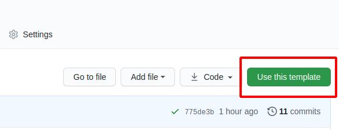

teedoc installation and use
Instructions
Need to install Python3 first (only support Python3)
For example, on Ubuntu:
sudo apt install python3 python3-pip
Windows and macOS please go to Official Website Download
Installation
Open the terminal and enter:
pip3 install teedoc
Later use the following command to update the software:
pip3 install teedoc --upgrade
If your network uses
pypi.organd the speed is very slow, you can choose other sources, such as Tsinghua tuna source:pip3 install teedoc -i https://pypi.tuna.tsinghua.edu.cn/simple
Now you can use the teedoc command in the terminal
If not, please check if the Python executable directory is not added to the environment variable PATH,
For example, it may be in ~/.local/bin
Building a web page
- Get the document template project
git clone https://github.com/teedoc/teedoc.github.io my_site
- Install plugin
This will install the plugin according to the plugin settings of plugins in site_config.sjon
cd my_site
teedoc install
The plug-in is also released in the form of
pythonpackage, so this will download the corresponding plug-in frompypi.org. Similarly, other sources can also be used, such as Tsinghua tuna source:teedoc -i https://pypi. tuna.tsinghua.edu.cn/simple install
- Build an
HTMLpage and start aHTTPservice
teedoc serve
This command will first build all HTML pages and copy resource files, and then start an HTTP service
If you only need to generate pages, use
teedoc build
After displaying Starting server at 0.0.0.0:2333 ...., it is fine
Open the browser to visit: http://127.0.0.1:2333
At the same time, you can see that there is an additional out directory under the directory, which is the generated static website content, directly copy it to the server and use nginx or apache for deployment.
Create a new warehouse based on the template warehouse on github
Visit https://github.com/teedoc/teedoc.github.io
Click Use this template

Then fill in the new warehouse name and description, create a new warehouse of your own based on this warehouse, and now you have obtained the warehouse exactly the same as the official website of teedoc
Then use git clone your warehouse address to clone to the local